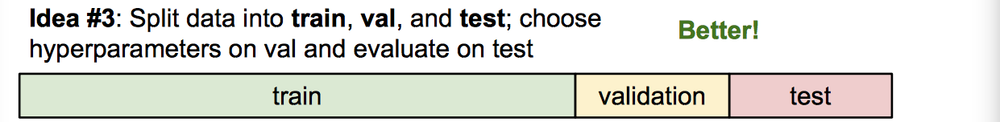

Lecture 2. Image Classification & K-nearest neighborThe Problem: Semantic GapChallengesData-Driven ApproachFisrt classifier: Nearest NeighborCodeDistance MetricDemoHyperparametersLinear ClassificationInterpreting a Linear Classifier: Three Viewpoints
CS231n 课程的官方地址：http://cs231n.stanford.edu/index.html
该笔记根据的视频课程版本是 Spring 2017(BiliBili)，PPt 资源版本是 Spring 2018.
另有该 Lecture 2. 扩展讲义资料：
Lecture 2. Image Classification & K-nearest neighbor
针对 CS231n 这个课程，我们的核心是：How do we work on this image (below) classification task?
The Problem: Semantic Gap

我们通过观察图片，可以得到明确的语义信息，比如图片对应的语义标签是猫还是狗。那么计算机究竟看到的是什么？是一堆堆砌起来的数字，如上图。这就是所谓的“Semantic gap”（语义鸿沟），显然这个差距是很大的。
Challenges
这里要说的是语义鸿沟显然不是单射的啊！可能有无数种堆砌而成的数字表示的像素，其表示的是同一个语义标签！比方说，
- Viewpoint variation（镜头不同视角）
- Illumination（光线照明条件）
- Deformation（语义对象可变形）
- Occlusion（语义对象被遮挡）
- Background Clutter（图像背景混淆）
- Intraclass variation（存在类内差异）
接下来，老师讲的内容就是说不太可能有一个直截了当的程序能够一下子解决图像识别的问题。其实这里正是凸显了“程序”和“算法”的最大差异之一，那就是“怎么停下来”。。。。
现今大多数图像识别的问题都是可以被解决的，因为我们用了数据驱动的方法！
Data-Driven Approach
最基本的步骤逻辑就三点：
- Collect a dataset of images and labels
- Use Machine Learning to train a classifier
- Evaluate the classifier on new images
就数据驱动的角度出发，开始举一个最简单的传统机器学习算法作为例子：Nearest Neighbor
Fisrt classifier: Nearest Neighbor
有两点提前说明：
数据集：CIFAR10
](https://i.loli.net/2018/08/18/5b77f561d0f4a.png)
Distance Metric to compare images：L1 distance
Code
Nearest Neighbor 的完整 Numpy 代码：
xxxxxxxxxx271import numpy as np23class NearestNeighbor:4def __init__(self):5pass67def train(self, X, y): # Memorize traing data8""" X is N x D where each row is an example. Y is 1-dimension of size N"""9# the nearest neighbor classifier simply remebers all the training data10self.Xtr = X11self.ytr = y1213def predict(self, X):14""" X is N x D where each row is an example we wish to predict label for"""15num_test = X.shape[0]16# lets make sure that the output type matches the input type17Ypred = np.zeros(num_test, dtype = self.ytr.dtype)1819# loop over all test rows20for i in xrange(num_test):21# find the nearest training image to the i'th test image22# using the L1 distance (sum of absolute value differences)23distances = np.sum(np.abs(self.Xtr - X[i,:], axis = 1))24min_index = np.argmin(distances) # get the index with smallest distance25Ypred[i] = self.ytr[min_index]2627return Ypred这个算法的特点也是缺点之一，就是训练得很快，预测的太慢。。。
还有对图片背景的鲁棒性很不好。
Distance Metric

- L1 距离取决于你选择的坐标系统。所以如果你转动坐标轴，将会改变点之间的 L1 距离。
- 而改变坐标轴对 L2 距离就毫无影响。L2 距离是一个确定的固定值，无论你在什么样的坐标轴下。
- 如果你输入的特征向量，其向量中的一些值对你的任务来说有一些重要的意义，那么也许 L1 距离可能更适合。
- 但如果它只是某个空间中的一个通用向量，而你不知道其中的不同的元素，那么 L2 可能更自然一些。
Demo

Hyperparameters
想让这个最简单的算法正常工作，你还是需要必须认为指定几个参数（K，distance metric）来搞事情，这就是所谓的“超参数”。他们未必都能从训练数据中学到。
究竟该如何设置这些超参数呢？小哥告诉我们。。。。
Very problem-dependent!
Must try them all out and see what works best.
额~ 传说中的炼金术这就开始了。。。。。
寻找超参数的过程该是怎样的呢？
训练集、验证集、测试集

交叉验证（深度学习不常用）

举个例子，体会一下：

K-Nearest Neighbor 算法显然是不会用在图像数据上的。原因主要有三点：
- Very slow at test time
- Distance metrics on pixels are not informative
- Curse of dimensionality
Linear Classification
线性分类是非常简单的，同时也是重要的！因为丫的就是神经网络的基础组成部分之一，就像乐高玩具一样用它来搭建网络。
线性分类器作为参数模型中最简单的例子，该算法与 k - 最近邻算法有着不同的实现思路。

- 函数的输入是图片+参数，输出就是分类得分，分越高的分类表示越像该类别。
- 矩阵乘法中行与列的含义是不对等的，其有着各自的不同含义。第一层的“行”一般来说，都是代表着一次性输入网络的样本个数，在最后输出层处，行代表的是总类别数目。（更详细和生动的描述可查阅另一篇原创文章：一段关于神经网络的故事）
Interpreting a Linear Classifier: Three Viewpoints

三种理解线性分类器的观点：
代数观点（是我们的向量化代码的直接体现，权重意义明显，直接对应类别得分大小）
可视化观点（训练好后的网络权重，分别对应到分类类别后进行可视化，相当于每个分类类别都有一个学习模板）
- “线性分类器可以解释为每个种类的学习模板。对图中的每个像素以及10个分类里的每一项在矩阵 W 里都有一些对应的项告诉我们那个像素对那个分类有多少影响。也就是说矩阵 W 里的每一行都对应一个分类模板。如果我们解开这些行的值（成图片的大小），那么每一行又分别对应一些权重，每个像素值和对应那个类别的一些权重，将这行分解回图像的大小，我们就可以可视化学到每个类的模板。”—— 来自 Lecture.3
几何观点（将图片的每个像素点当做是结构化数据的每个特征值后，进行高维空间类别划分）
- “学习像素在高维空间的一个线性决策边界。其中高维空间就对应了图片能取到的像素密度值。”—— 来自 Lecture.3
线性分类器的致命缺点，看个图感受一下就好：（难以划一刀将蓝色和红色两类区分开来。）


This work is licensed under a Creative Commons Attribution-NonCommercial-ShareAlike 4.0 International License.